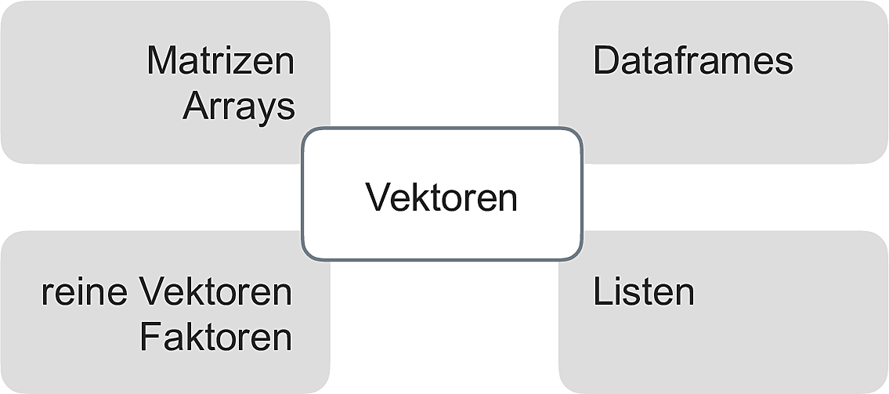

5 R, zweiter Blick
Benötigte R-Pakete für dieses Kapitel:
5.1 Lernsteuerung
5.1.1 Literatur
- Rhys, Kap. 2
- MODAR, Kap. 5
5.1.2 Lernziele
- Sie können Funktionen, in R schreiben.
- Sie können Datensätze vom Lang- und Breit-Format wechseln.
- Sie können Wiederholungsstrukturen wie Mapping-Funktionen anwenden.
- Sie können eine dplyr-Funktion auf mehrere Spalten gleichzeitig anwenden.
5.1.3 Vorbereitung
- Lesen Sie die Literatur.
5.2 Objekttypen in R
Näheres zu Objekttypen findet sich in Sauer (2019), Kap. 5.2.
5.2.1 Überblick
In R ist praktisch alles ein Objekt.
Definition 5.1 (Objekt (Informatik)) Ein Objekt meint ein im Computerspeicher repräsentiertes Ding, etwa eine Tabelle.\(\square\)
Beispiel 5.1 (Beispiele für Objekte) Vektoren und Dataframes (Tibbles) sind die vielleicht gängigsten Objektarten in R (vgl. Abbildung 5.1), aus Sauer (2019)).\(\square\)
Es gibt in R keine (Objekte für) Skalare (einzelne Zahlen). Stattdessen nutzt R Vektoren der Länge 1.
Ein nützliches Schema stammt aus Wickham und Grolemund (2016), s. Abbildung 5.2).

5.2.2 Taxonomie
Unter homogenen Objektiven verstehen wir Datenstrukturen, die nur eine Art von Daten (wie Text oder Ganze Zahlen) fassen. Sonstige Objekte nennen wir heterogen.
- Homogene Objekte
- Vektoren
- Matrizen
- Heterogen
- Liste
- Dataframes (Tibbles)
5.2.2.1 Vektoren
Vektoren sind insofern zentral in R, als dass die übrigen Datenstrukturen auf ihnen aufbauen, vgl. Abbildung 5.3 aus Sauer (2019).
Reine (atomare) Vektoren in R sind eine geordnete Liste von Daten eines Typs.

Mit str() kann man sich die Struktur eines Objektsausgeben lassen:
Vektoren können von folgenden Typen sein:
- Kommazahlen (
double) genannt - Ganzzahlig (
integer, auch mitLfür Long abgekürzt) - Text (´character`, String)
- logische Ausdrücke (
logicaloderlgl) mitTRUEoderFALSE
Kommazahlen und Ganze Zahlen zusammen bilden den Typ numeric (numerisch) in R.
Den Typ eines Vektors kann man mit typeof() ausgeben lassen:
typeof(ein_vektor)
## [1] "double"5.2.2.2 Faktoren
Interessant:
str(sex)
## Factor w/ 2 levels "Frau","Mann": 2 1 1Vertiefende Informationen findet sich in Wickham und Grolemund (2016).
5.2.2.3 Listen
eine_liste <- list(titel = "Einführung",
woche = 1,
datum = c("2022-03-14", "2202-03-21"),
lernziele = c("dies", "jenes", "und noch mehr"),
lehre = c(TRUE, TRUE, TRUE)
)
str(eine_liste)
## List of 5
## $ titel : chr "Einführung"
## $ woche : num 1
## $ datum : chr [1:2] "2022-03-14" "2202-03-21"
## $ lernziele: chr [1:3] "dies" "jenes" "und noch mehr"
## $ lehre : logi [1:3] TRUE TRUE TRUE5.2.2.4 Tibbles
Für tibble() brauchen wir tidyverse:
5.2.3 Indizieren
Einen Teil eines Objekts auszulesen, bezeichnen wir als Indizieren.
5.2.3.1 Reine Vektoren
Zur Erinnerung:
str(ein_vektor)
## num [1:3] 1 2 3ein_vektor[1]
## [1] 1
ein_vektor[c(1,2)]
## [1] 1 2Aber nicht so:
ein_vektor[1,2]
## Error in ein_vektor[1, 2]: incorrect number of dimensionsMan darf Vektoren auch wie Listen ansprechen, also eine doppelte Eckklammer zum Indizieren verwenden
ein_vektor[[2]]
## [1] 2Der Grund ist, dass Listen auch Vektoren sind, nur eben ein besonderer Fall eines Vektors:
is.vector(eine_liste)
## [1] TRUEWas passiert, wenn man bei einem Vektor der Länge 3 das 4. Element indiziert?
ein_vektor[4]
## [1] NAEin schnödes NA ist die Antwort. Das ist interessant: Wir bekommen keine Fehlermeldung, sondern den Hinweis, das angesprochene Element sei leer bzw. nicht verfügbar.
In Sauer (2019), Kap. 5.3.1 findet man weitere Indizierungsmöglichkeiten für reine Vektoren.
5.2.3.2 Listen
Listen können wie Vektoren, also mit [ ausgelesen werden. Dann wird eine Liste zurückgegeben.
eine_liste[1]
## $titel
## [1] "Einführung"
eine_liste[2]
## $woche
## [1] 1Das hat den technischen Hintergrund, dass Listen als eine bestimmte Art von Vektoren implementiert sind.
Mann kann auch die “doppelte Eckklammer”, [[ zum Auslesen verwenden; dann wird anstelle einer Liste die einfachere Struktur eines Vektors zurückgegeben:
eine_liste[[1]]
## [1] "Einführung"Man könnte sagen, die “äußere Schicht” des Objekts, die Liste, wird abgeschält, und man bekommnt die “innere” Schicht, den Vektor.
Mann die Elemente der Liste entweder mit ihrer Positionsnummer (1, 2, …) oder, sofern vorhanden, ihren Namen ansprechen:
eine_liste[["titel"]]
## [1] "Einführung"Dann gibt es noch den Dollar-Operator, mit dem Mann benannte Elemente von Listen ansprechen kann:
eine_liste$titel
## [1] "Einführung"Man kann auch tiefer in eine Liste hinein indizieren. Sagen wir, uns interessiert das 4. Element der Liste eine_liste - und davon das erste Element.
Das geht dann so:
eine_liste[[4]][[1]]
## [1] "dies"Eine einfachere Art des Indizierens von Listen bietet die Funktion pluck(), aus dem Paket purrr, das Hilfen für den Umgang mit Listen bietet.
pluck(eine_liste, 4)
## [1] "dies" "jenes" "und noch mehr"Und jetzt aus dem 4. Element das 1. Element:
pluck(eine_liste, 4, 1)
## [1] "dies"Probieren Sie mal, aus einer Liste der Länge 5 das 6. Element auszulesen:
eine_liste[[6]]
## Error in eine_liste[[6]]: subscript out of boundsUnser Versuch wird mit einer Fehlermeldung quittiert.
Sprechen wir die Liste wie einen (atomaren) Vektor an, bekommen wir hingegen ein NA bzw. ein NULL:
eine_liste[6]
## $<NA>
## NULL5.2.3.3 Tibbles
Tibbles lassen sich sowohl wie ein Vektor als auch wie eine Liste indizieren.
studentis[1]Die Indizierung eines Tibbles mit der einfachen Eckklammer liefert einen Tibble zurück.
studentis["name"]Mit doppelter Eckklammer bekommt man, analog zur Liste, einen Vektor zurück:
studentis[["name"]]
## [1] "Anna" "Berta"Beim Dollar-Operator kommt auch eine Liste zurück:
studentis$name
## [1] "Anna" "Berta"5.2.4 Weiterführende Hinweise
- Tutorial zum Themen Indizieren von Listen von Jenny BC.
5.2.5 Indizieren mit dem Tidyverse
Natürlich kann man auch die Tidyverse-Verben zum Indizieren verwenden. Das bietet sich an, wenn zwei Bedingungen erfüllt sind:
- Wenn man einen Tibble als Input und als Output hat
- Wenn man nicht programmieren möchte
5.3 Datensätze von lang nach breit umformatieren
Manchmal findet man Datensätze im sog. langen Format vor, manchmal im breiten.
In der Regel müssen die Daten “tidy” sein, was meist dem langen Format entspricht, vgl. Abbildung 5.4 aus Sauer (2019).

In einer neueren Version des Tidyverse werden diese beiden Befehle umbenannt bzw. erweitert, s. Abbildung 5.5.

Weitere Informationen findet sich in Wickham und Grolemund (2016), in diesem Abschnitt, 12.3.
5.4 Funktionen
Eine Funktion kann man sich als analog zu einer Variable vorstellen. Es ist ein Objekt, das nicht Daten, sondern Syntax beinhaltet, vgl. Abbildung 5.6 aus Sauer (2019).

mittelwert(c(1, 2, 3))
## [1] 2Weitere Informationen finden sich in Kapitel 19 in Wickham und Grolemund (2016). Alternativ findet sich ein Abschnitt dazu (28.1) in Sauer (2019).
5.5 Wiederholungen programmieren
Häufig möchte man eine Operation mehrfach ausführen. Ein Beispiel wäre die Anzahl der fehlenden Werte pro Spalte auslesen. Natürlich kann man die Abfrage einfach häufig tippen, nervt aber irgendwann. Daher braucht’s Strukturen, die Wiederholungen beschreiben.
Dafür gibt es verschiedene Ansätze.
5.5.1 across()
Handelt es sich um Spalten von Tibbles, dann bietet sich die Funktion across(.col, .fns) an. across wendet eine oder mehrere Funktionen (mit .fns bezeichnet) auf die Spalten .col an.
Das erklärt sich am besten mit einem Beispiel:
Natürlich hätte man in diesem Fall auch anders vorgehen können:
mtcars %>%
summarise(across(.cols = everything(),
.fns = mean))Möchte man der Funktion .fns Parameter übergeben, so nutzt man diese Syntax (“Purrr-Lambda”):
mtcars %>%
summarise(across(.cols = everything(),
.fns = ~ mean(., na.rm = TRUE)))
5.5.2 map()
map() ist eine Funktion aus dem R-Paket purrr und Teil des Tidyverse.
map(x, f) wenden die Funktion f auf jedes Element von x an. Ist x ein Tibble, so wird f demnach auf jede Spalte von x angewendet (“zugeordnet”, daher map), vgl. Abbildung 5.7 aus Sauer (2019).

Hier ein Beispiel-Code:
Möchte man der gemappten Funktion Parameter übergeben, nutzt man wieder die “Kringel-Schreibweise”:
5.5.3 Weiterführende Hinweise
Weiteres zu map() findet sich z.B. in Wickham und Grolemund (2016), Kapitel 21.5 oder in Sauer (2019), Kap. 28.2.
5.6 Listenspalten
5.6.1 Wozu Listenspalten?
Listenspalten sind immer dann sinnvoll, wenn eine einfache Tabelle nicht komplex genug für unsere Daten ist.
Zwei Fälle stechen dabei ins Auge:
- Unsere Datenstruktur ist nicht rechteckig
- In einer Zelle der Tabelle soll mehr als ein einzelner Wert stehen: vielleicht ein Vektor, eine Liste oder eine Tabelle
Der erstere Fall (nicht reckeckig) ließe sich noch einfach lösen, in dem man mit NA auffüllt.
Der zweite Fall verlangt schlichtweg nach komplexeren Datenstrukturen.
Kap. 25.3 aus Wickham und Grolemund (2016) bietet einen guten Einstieg in das Konzept von Listenspalten (list-columns) in R.
5.6.2 Beispiele für Listenspalten
5.6.2.1 tidymodel
Wenn wir mit tidymodels arbeiten, werden wir mit Listenspalten zu tun haben. Daher ist es praktisch, sich schon mal damit zu beschäftigen.
Hier ein Beispiel für eine \(v=3\)-fache Kreuzvalidierung:
library(tidymodels)
mtcars_cv <-
vfold_cv(mtcars, v = 3)
mtcars_cvBetrachten wir das Objekt mtcars_cv näher. Die Musik spielt in der 1. Spalte.
Lesen wir den Inhalt der 1. Spalte, 1 Zeile aus (nennen wir das mal “Position 1,1”):
pos11 <- mtcars_cv[[1]][[1]]
pos11
## <Analysis/Assess/Total>
## <21/11/32>In dieser Zelle findet sich eine Aufteilung des Komplettdatensatzes in den Analyseteil (Analysis sample) und den Assessmentteil (Assessment Sample).
Schauen wir jetzt in dieses Objekt näher an. Das können wir mit str() tun. str() zeigt uns die Strktur eines Objekts.
str(pos11)
## List of 4
## $ data :'data.frame': 32 obs. of 3 variables:
## ..$ mpg : num [1:32] 21 21 22.8 21.4 18.7 18.1 14.3 24.4 22.8 19.2 ...
## ..$ cyl : num [1:32] 6 6 4 6 8 6 8 4 4 6 ...
## ..$ disp: num [1:32] 160 160 108 258 360 ...
## $ in_id : int [1:21] 1 2 3 4 6 7 9 10 11 12 ...
## $ out_id: logi NA
## $ id : tibble [1 × 1] (S3: tbl_df/tbl/data.frame)
## ..$ id: chr "Fold1"
## - attr(*, "class")= chr [1:2] "vfold_split" "rsplit"Oh! pos11 ist eine Liste, und zwar eine durchaus komplexe. Wir müssen erkennen, dass in einer einzelnen Zelle dieses Dataframes viel mehr steht, als ein Skalar bzw. ein einzelnes, atomares Element.
Damit handelt es sich bei Spalte 1 dieses Dataframes (mtcars_cv) also um eine Listenspalte.
Üben wir uns noch etwas im Indizieren.
Sprechen wir in pos11 das erste Element an (data) und davon das erste Element:
pos11[["data"]][[1]]
## [1] 21.0 21.0 22.8 21.4 18.7 18.1 14.3 24.4 22.8 19.2 17.8 16.4 17.3 15.2 10.4
## [16] 10.4 14.7 32.4 30.4 33.9 21.5 15.5 15.2 13.3 19.2 27.3 26.0 30.4 15.8 19.7
## [31] 15.0 21.4Wir haben hier die doppelten Eckklammern benutzt, um den “eigentlichen” oder “inneren” Vektor zu bekommen, nicht die “außen” herumgewickelte Liste. Zur Erinnerung: Ein Dataframe ist ein Spezialfall einer Liste, also auch eine Liste, nur eine mit bestimmten Eigenschaften.
Zum Vergleich indizieren wir mal mit einer einfachen Eckklammer:
Mit pluck() bekommen wir das gleiche Ergebnis, nur etwas komfortabler, da wir keine Eckklammern tippen müssen:
pluck(pos11, "data", 1, 1)
## [1] 21Wie man sieht, können wir beliebig tief in das Objekt hineinindizieren.
5.6.3 Programmieren mit dem Tidyverse
Das Programmieren mit dem Tidyvers ist nicht ganz einfach und hier nicht näher ausgeführt. Eine Einführung findet sich z.B.
- Tidyeval in fünf Minuten (Video)
- In Kapiteln 17-21 in Advanced R, 2nd Ed
- Ein Überblicksdiagramm findet sich hier Quelle.
5.7 R ist schwierig
Manche behaupten, R sei ein Inferno.
Zum Glück gibt es auch aufmunternde Stimmen:
praise::praise()
## [1] "You are luminous!"Hat jemand einen guten Rat für uns? Vielleicht ist der häufigste Rat, dass man die Dokumentation lesen solle.